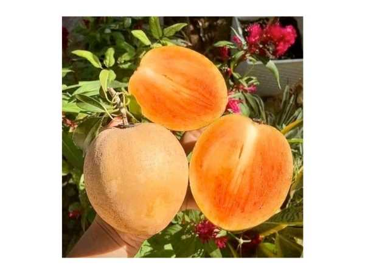

Manilkara zapota 'Thai King'
Common Names: Thai King Sapota, Sapodilla, Chikoo
Local Name: Sapota (Tamil), Chikoo (Hindi/Marathi), Lamoot (Thai)
Family: Sapotaceae
Origin: Thailand (selected cultivar); species native to Central America
Plant Type: Perennial evergreen tree
Variety: Thai King — large-fruited variety (200–400 g per fruit) with brown, sweet, grainy flesh
Average Lifespan: 40–100+ years
| Growth Habit | Medium to large evergreen tree with dense, pyramidal canopy |
| Plant Size | 8–15 meters tall; canopy spread 6–10 meters |
| Leaves | Alternate, elliptic, 7–15 cm, glossy dark green, clustered at branch tips |
| Flowers | Small, white, bell-shaped, 8–10 mm; borne singly in leaf axils |
| Flower Characteristics | Inconspicuous, fragrant; blooms year-round in tropical climates |
| Fruit | Large oval to round, 200–400 g (Thai King is notably larger than standard varieties); rough brown skin, sweet grainy flesh |
| Fruit Color | Brown rough skin; pinkish-brown to caramel-colored sweet flesh |
| Seed Characteristics | 2–5 flat, black, glossy seeds per fruit; hook at one end |
| Root System | Deep taproot with lateral roots; produces white latex throughout |
| Climate | Tropical to warm subtropical; tolerates heat and humidity well |
| Temperature Range | 25–35°C ideal; tolerates up to 45°C; frost-sensitive below 0°C |
| Rainfall Requirement | 1000–2500 mm annually; tolerates dry periods once established |
| Soil Type | Well-drained sandy loam, laterite, or calcareous soil; very adaptable |
| Soil pH Preference | 6.0–8.0 (tolerates alkaline soils) |
| Sun Requirement | Full sun (8+ hours daily) |
| Spacing | 8–10 meters between trees |
| Irrigation Method | Basin or drip irrigation; withhold water before flowering to induce blooming |
| Water Requirement | Moderate; drought-tolerant once established |
| Can it Grow in Pots? | Young trees in large pots (50+ liters); will limit fruit size |
| Fertilizer Schedule | 3–4 times per year; increase during fruiting |
| Recommended Organic Fertilizers | FYM (25–40 kg/tree/year), vermicompost, neem cake, bone meal |
| Pesticide Frequency | 2–3 sprays during fruiting season |
| Recommended Organic Pesticides | Neem oil, garlic-chili spray, panchagavya |
| Mulching Practice | Organic mulch around base; keep away from trunk |
| Training System | Modified central leader; maintain open canopy |
| Pruning Time | After main harvest; light pruning only |
| How to Prune | Remove dead, crossing branches; tip-prune for compact growth; sapota responds slowly to pruning |
| Common Pests | Leaf webber, bud borer, fruit fly, hairy caterpillar, scale insects |
| Common Diseases | Leaf spot, sooty mold, root rot, fruit rot |
| Disease Prevention & Remedies | Good drainage, proper spacing, copper fungicides, remove fallen fruit |
| Flowering Months | Year-round in tropics; main flush October–November and February–March |
| Fruiting Season | January–April (main); secondary crop June–August |
| Days to Harvest | 240–300 days from flowering (sapota is slow to mature) |
| Harvest Indicators | Skin turns from sandy to smooth brown; scratching reveals yellow-green (not white latex); fruit detaches easily |
| Average Yield per Plant | 150–300 fruits per tree per year (mature); Thai King produces fewer but larger fruits |
| Pollination Type | Self-pollination and insect pollination |
| Pollination Notes | Self-fertile; insects aid pollination; good fruit set without hand pollination |
| Pollination Details | Self-fertile; small insects and thrips assist pollination |
| Propagation by Seeds | Seeds germinate in 2–4 weeks; seedlings take 6–8 years to fruit; not true-to-type |
| Propagation by Cuttings | Difficult; air layering possible but slow rooting |
| Propagation by Grafting | Softwood or inarching grafting on seedling rootstock; preferred for Thai King |
| Water Usage | Low to moderate; very drought-tolerant once established |
| Soil Conservation Practices | Deep roots stabilize soil; evergreen canopy provides year-round cover |
| Organic Practices Used | Composting, mulching, panchagavya, jeevamrutha |
| Companion Plants | Leguminous cover crops, curry leaf, drumstick as intercrops |
| Biodiversity Benefits | Flowers attract pollinators; fruit eaten by birds and bats |
| Commercial Production Regions | Thailand, India (Gujarat, Karnataka, Maharashtra), Mexico, Philippines |
| Market Uses | Fresh fruit, premium dessert fruit; Thai King commands higher prices due to size |
| Processing Uses | Milkshakes, ice cream, jam, dried fruit, sapota halwa |
| Market Value (Approx.) | ₹60–200 per kg; Thai King variety fetches premium prices |
| Symbolism | Sapodilla historically important as source of chicle (natural chewing gum base) |
| Traditional Uses | Bark used in traditional medicine; latex (chicle) for chewing gum; wood for construction |
| Calories | 83 kcal per 100g |
| Dietary Fiber | 5.3 g per 100g |
| Vitamin C | 14.7 mg per 100g |
| Vitamin A | 60 IU per 100g |
| Iron | 0.8 mg per 100g |
| Potassium | 193 mg per 100g |
| Antioxidants | Tannins, polyphenols, flavonoids |
| Other Key Nutrients | Niacin, folate, pantothenic acid, copper |
| Anxiety & Sleep | Traditionally used as a mild sedative; fruit promotes relaxation |
| Immune Support | Vitamin C and tannins support immune function |
| Anti-inflammatory Properties | Tannins and polyphenols show anti-inflammatory activity |
| Heart Health | Fiber and potassium support cardiovascular health |
| Digestive Health | High fiber content aids digestion; tannins have anti-diarrheal properties |
Disclaimer: Information provided is for educational purposes only and not a substitute for medical advice.
Add your field observations here.